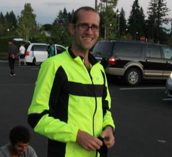
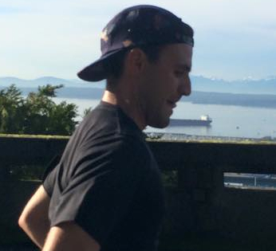
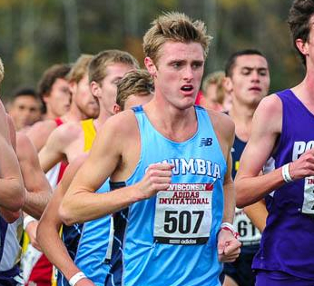
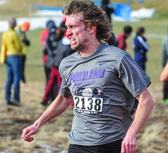

Scott Olberding
A founder of JBAC, Scott is perhaps the member most emblematic of the group's ideals. With his Heartland sensibilities and a penchant for getting after it, this accountant, statistician, philosopher and sportsman brings the ruckus to the roads and to the dance floor. His favorite Bruce album is Nebraska.

Robert Cosby
Big Bob Cosby's Eastern Washington roots have ingrained in him an unparalleled toughness and ability to crush. Never one to back away from a challenge, Cos is pursuing a doctorate in clinical psychology, and is an on-line acquaintance of Drew Bledsoe's. In true Spokanite form, Rob is as handy on a skateboard as he is with a tool belt.

Dusty Lieb
Maryland-born, UPenn-learned, Virginia-hardened, Portland-perfected. Dusty is in the midst of a running Renaissance in the PNW following nearly a decade of the high finance lifestyle in Richmond, VA. He brings a unique perspective, a heck of an aerobic capacity, a beautiful young family and a standoffish Vizsla to the JBAC.

Brooks Broom
Brooks possesses the coolest name imaginable, once smoked three cigarettes backwards at the same time, and is employed by Amazon where he splits his time between the Finance and Drone Warfare departments. A true friendship stalwart and fitness enthusiast, Brooks is trouble on the trail, as well as on the speed dating circuit.

Nico Composto
The JBAC's sole representative in the Midwest, Nico is now chasing his dream of becoming a collegiate track coach in beautiful Peoria, IL. Occasionally Gump-like, he once completed a casual 50-miler in a time that would have placed 2nd at the USATF championships for that distance, simply because "[he] felt like running."

Jake Sienko
Jake is generally considered to be the JBAC member "most easily mistaken for Elijah Wood." He recently qualified for the Olympic Trials with a 1:04:35 debut half-marathon - which is probably worth noting. Hailing from Rhode Island, Jake calls drinking fountains "bubblers."

Joel Turkheimer
Having attended both high school and college in PDX, Turk is the educational poster child for greater Portland. A commodities analyst by trade (what the heck does that mean?!), and an endurance man by specialty, Joel spends his minimal free time sipping artisan-blended coffee and standing with his arms folded - not at the same time.
Russell Drummond
Russell is the most objectively interesting member of the squad, and is truly a Jacuzzi Man amongst Jacuzzi Boys. A burly engineer hailing from Eugene, OR, Russell attended a prestigious university in Coors Light, CO, has been lauded for his sailing skills, and is known to demonstrate slick miler's speed on the ol' Tartan oval, from time-to-time.

Cody Barton
Barton is the squad's wildcard. A native of Vancouver, WA, and an alumnus of a Cheney-based institution of higher learning, Cody also moonlights as the voice of University of Portland's women's soccer, a role in which he curses way too frequently to be appropriate. He lives in the woods and teaches high school. Nice.

Ben Paynter
Like Cosby, Ben is a clinical psychologist in training. Unlike Cosby, Ben is from Wisconsin, and specializes in ultra-marathons. He's an absolute whiz at Buck Hunter, a popular hunting-simulating video game, and when not wowing crowds at bars with this prowess, you can find him "sweating it out" at one of Portland's countless saunas.

Alex Dickinson
This freelance copywriter hails from the mean streets of Seattle, WA, and is the most accomplished cyclist of the bunch. But he's no slouch on two feet either, despite only "dabbling" in running. Alex is the resident wordsmith of the JBAC, and has yet to meet his match when it comes to eloquence or coffee consumption.

Paul Snyder
Paul heads the JBAC's East Coast Syndicate. Presently presiding in Brooklyn, he can be found self-consciously nodding his head, botching interactions with new people, "riffing" with pals, or simply hanging out.
Karim Shakalia
Karim Shakalia's Oregon roots run deep. Hailing from Troutdale, this die-hard Blazers fan competed collegiately for Warner Pacific, where he now serves as the assistant distant coach. When not arguing on behalf of Arvydas Sabonis's legacy as an all-time great NBA center, you can catch Karim on the trail, or doin' a little accounting on the side - just for kicks.
Stephen Young
A New Jersey-native turned freelance web designer, Steve studied two degrees worth of marketing material at Philadelphia's St. Joseph's University, before calling an audible and learning to code with help from Portland Code School. Best known for his warm smile and killer range, rumors abound that Steve has shaken the hand of every competitor he has ever bested - of which there are plenty. He designed this website.